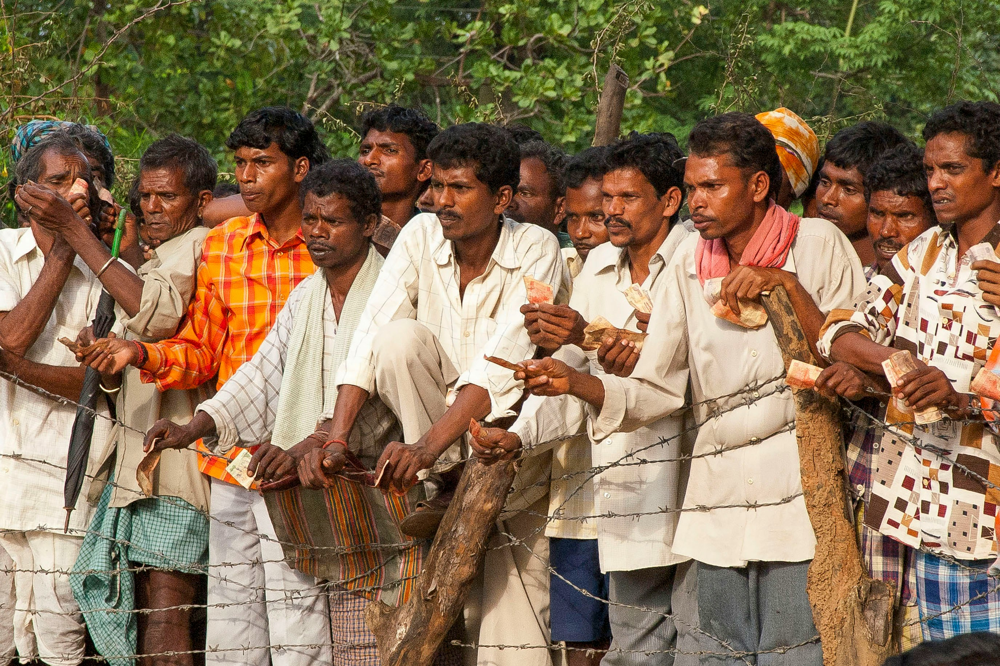
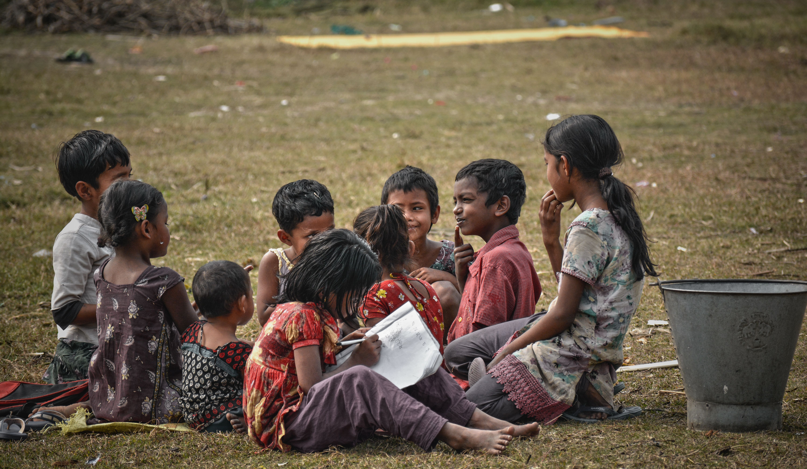

🌱 Environment
Environmental Conservation
Promoting environmental sustainability through tree plantation, awareness campaigns and climate action initiatives.
Explore Initiative →SATYA is a registered public charitable trust empowering youth, creating awareness, and driving sustainable social transformation through education, environmental action, community participation, and inclusive development.
↓Discover SATYA
SATYA (Social Awareness and Transformative Youth Action) is a registered public charitable trust founded on 12 January 2026. We empower youth, create awareness, and transform society through education, environmental conservation, community participation, and sustainable development.
Explore Our Story →
SATYA works across multiple sectors to promote inclusive, sustainable and community-driven development.
Supporting sustainable farming and rural livelihoods.
Promoting quality education and lifelong learning.
Improving community health and well-being.
Raising awareness, prevention and support initiatives.
Empowering villages through sustainable development.
Every journey begins with a single step. Since our establishment, SATYA has been laying the foundation for long-term social impact through dedicated leadership and community-focused initiatives.
Every initiative reflects our commitment to creating sustainable, inclusive and lasting social impact.
Promoting environmental sustainability through tree plantation, awareness campaigns and climate action initiatives.
Explore Initiative →
Empowering young people through education, leadership, awareness and skill development.
Explore Initiative →
Building stronger communities through awareness, health and inclusive development initiatives.
Explore Initiative →Every volunteer, supporter and partner helps create lasting change through education, community development, environmental conservation and youth empowerment.
Together, every action creates a better future.